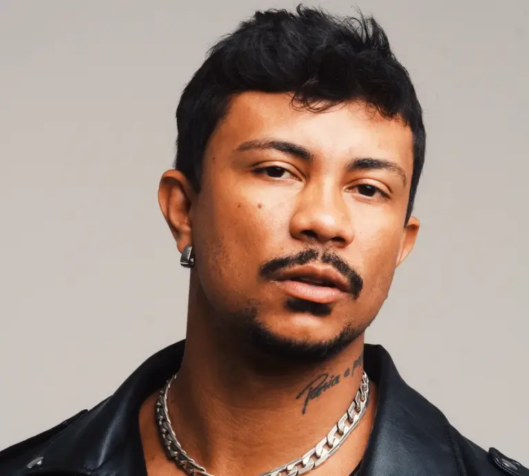

Xamã
35 anos
35 anos
XAMÃ (RAPPER). In: WIKIPÉDIA, a enciclopédia livre. Flórida: Wikimedia Foundation, 2024. Disponível em: https://pt.wikipedia.org/w/index.php?title=Xam%C3%A3_(rapper)&oldid=68898996 Acesso em: 28 out. 2024.
Geizon Carlos da Cruz Fernandes, conhecido como Xamã (Rio de Janeiro, 30 de outubro de 1989), é um rapper, cantor e ator brasileiro. Ele iniciou sua carreira musical em 2016 e lançou quatro álbuns, incluindo Pecado Capital (2018) e Zodíaco (2020), que contou com participações de artistas como Marília Mendonça e Luísa Sonza. O single "Leão", de Zodíaco, acumulou mais de 45 milhões de visualizações.
Seu primeiro grande sucesso, "Luxúria", com Matuê, foi lançado em 2018. Já "Malvadão 3", lançado em 2021, atingiu o topo do Spotify Brasil e se destacou internacionalmente. Ele recebeu sete indicações no MTV Millennial Awards e foi o único brasileiro indicado ao BET Hip Hop Awards em 2021.
Além da música, Xamã estreará como ator na série Justiça, da TV Globo, e participou do videoclipe Cachimbo da Paz 2 com Gabriel o Pensador e Lulu Santos em 2023.